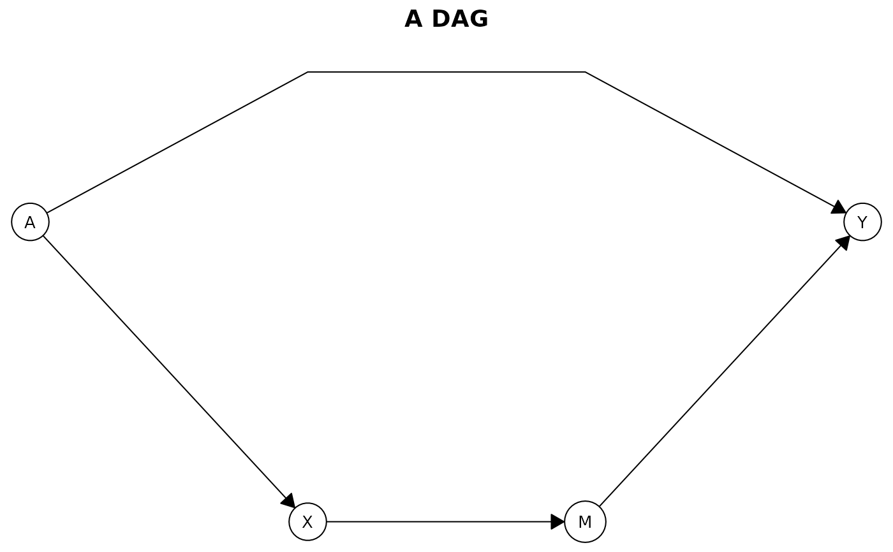
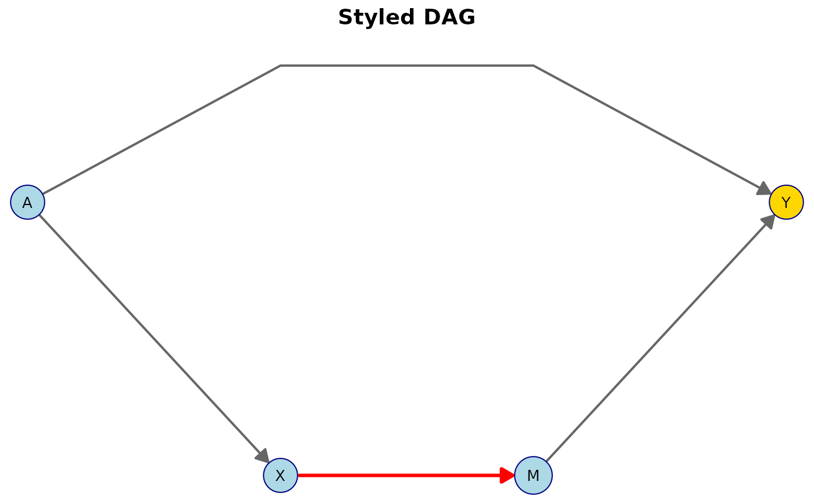
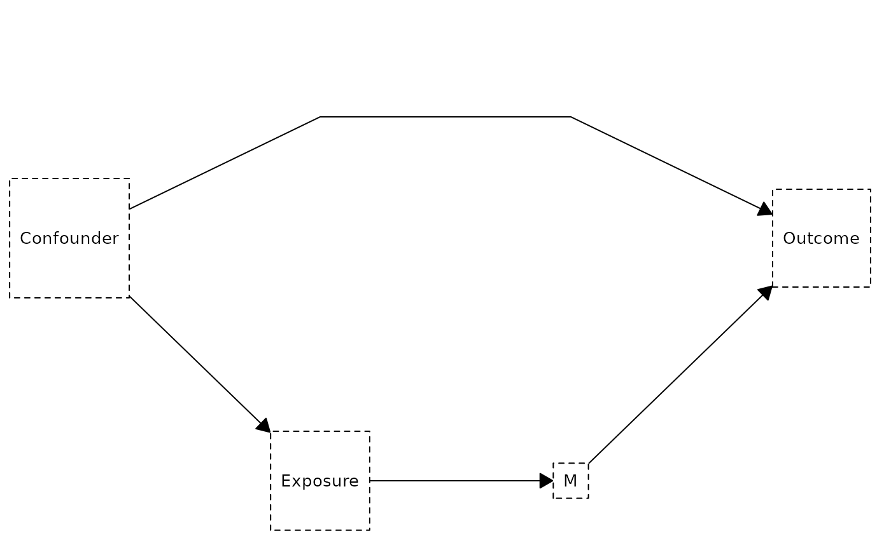

Plot method for cgraph. node_style, edge_style, label_style, and
title_style each default to the corresponding entry
from plot_options() (which itself defaults to
plot_default_options()) - set those globally with plot_options() to
avoid repeating the same style lists at every call site; arguments passed
here still take precedence.
Arguments
- x
A graph created with
cgraph(), of any class.- layout
Specifies the layout. Can be:
NULL(default):cgraph_layout()'s own default -"sugiyama"for aDAG,"stress"otherwise.A character string passed to
cgraph_layout()asmethod("sugiyama","stress","shell","squaregrid"). With"sugiyama"(also theNULLdefault for aDAG), each edge is also drawn along Sugiyama.jl's own route through its bend points, as in CausalStructures.jl; passcgraph_layout(x, "sugiyama")instead to use the Sugiyama positions with this function's own edge routing.A layout function, called with
xand any....A pre-computed layout
data.framewith columnsname,x,y.A named list keyed by node name, each element a length-2
c(x, y), e.g.list(A = c(0, 0), X = c(1, 0)).
- node_style
List of node styling parameters:
fill,col,lwd,padding(mm, default 2),size(multiplier, default 1),radius(mm; when set, every node is drawn at this fixed half-extent instead of being fitted to its label - mirrors CausalStructures.jl's Makieplot()'snode_radius),shape("circle"(default),"square","ellipse", or"rect"-"circle"/"square"are fitted to their label and always rounded out to equal sides, while"ellipse"/"rect"keep the fitted oblong box as-is; there is no automatic switching between them based on label length, matching CausalStructures.jl's Makieplot(), whosenode_shapeis an explicit choice among these same four - edges clip to, and route around, the shape actually drawn),linestyle(e.g."dashed","dotted"- any value grid'sltyaccepts - for a non-solid node border; default solid), andby_node(named list of per-node overrides, which can includeshape/linestyle/radiustoo).- edge_style
List of edge styling parameters. Can specify global options or per-type options via
directed,undirected,bidirected,partially_directed(o->),partially_undirected(o--),partial(o-o) - matching CausalStructures.jl's Makieplot()'s six edge-type groups (draw.jl's_edge_type). Fields:col,lwd,fill(arrowhead fill color; defaults tocolso arrowheads render solid and match the edge - passfill = NAfor a hollow/outline arrowhead),arrow_size(mm, default 3),circle_size(mm, default 1.5, foro->/o--/o-oendpoints; an edge that would otherwise cross a non-incident node always bends around it as a Bezier curve unlesscurvatureoverrides this; parallel edges sharing a node pair, e.g. an ADMG'sX --> Y/X <-> Y, automatically fan out apart from each other for the same reason), andcurvature(unset by default; bows an edge into an arc by this signed fraction of its length - positive bows left of thefrom-to-todirection, negative right; setting it (including to0) is a manual override that takes precedence over both the automatic obstacle-avoidance bend and the automatic parallel-edge fan-out above), andby_edge(named list of per-edge or per-node overrides, keyed by node name(s)). Style precedence (highest to lowest): specific edge settings inby_edge> node-wide settings inby_edge> edge-type settings > global settings.Also:
lty(line style),gap(mm, default 0; extra space between each end of the edge and the node border),path(explicit waypoints, in layout coordinates, that the edge is drawn through as straight segments from its source to its destination, overriding every automatic route: a two-column matrix, adata.framewithx/ycolumns, or a list ofc(x, y)points; set it per edge inby_edge, where a path given under the reversed pair runs fromtotofrom), and an edge label:label(text, unset by default),label_col,label_fontsize(default 9),label_fontface,label_fontfamily,label_shift(position along the edge, from 0 at the source to 1 at the destination; default 0.5),label_distance(mm from the edge, to its left; defaults to the label's font size) andlabel_rotation(degrees; by default the label follows the edge's angle, turned to read upright). Like every other field, these can be set globally, per edge type, or per edge inby_edge.by_edge's pair-level entries (by_edge[[from]][[to]]) apply to every edge between that pair, which can't tell apart e.g. an ADMG's parallelX --> YandX <-> Y. To style one exact edge type between a pair, nest it one level deeper under the reserved key.by_type, keyed by the edge's notation ("-->","<->","o-o", ...; seeedges()):by_edge = list(X = list(Y = list(.by_type = list("-->" = list(col = "red"), "<->" = list(col = "blue"))))). This tier takes precedence over the plain pair-level entry.- label_style
List of node label styling parameters:
col,fontsize,fontface,fontfamily,cex, andby_node(named list of per-node overrides, as innode_style).- labels
Optional named character vector or list overriding the text drawn in each node (e.g.
c(X = "Exposure", Y = "Outcome")), whileedge_style/by_node/by_edgeetc. keep using the graph's actual node names. A node missing fromlabelsfalls back to a"default"entry if present, else its own name.NULL(default) shows every node's own name, as before. Embedded\ngives a multi-line label.- main
Optional plot title.
- title_style
List of title styling parameters (same fields as
label_style).- asp
Optional y/x aspect ratio.
NA(default) fills the available space;asp = 1makes one x-unit equal one y-unit.- outer_margin
Grid unit for the outer margin. Default
grid::unit(2, "mm").- title_gap
Grid unit for the gap between title and graph. Default
grid::unit(1, "lines").- newpage
If
TRUE(default), callgrid::grid.newpage()before drawing.- ...
Passed to
layoutwhen it is a character string or function.
Value
A cgraph_plot object, invisibly. Drawn immediately as a side
effect; re-drawn if printed or passed to plot() again.
See also
plot_options() to change the style defaults used above,
globally, for every plot.
Other plotting:
cgraph_layout(),
plot_default_options(),
plot_options()
Examples
if (julia_ready()) {
dag <- cgraph("A --> X + Y, X --> M --> Y")
plot(dag, main = "A DAG")
# Style nodes and edges globally, plus per-node/per-edge overrides.
dag <- cgraph("A --> X + Y, X --> M --> Y")
plot(
dag,
node_style = list(
fill = "lightblue",
col = "navy",
by_node = list(Y = list(fill = "gold"))
),
edge_style = list(
col = "gray40",
lwd = 2,
by_edge = list(X = list(M = list(col = "red", lwd = 3)))
),
main = "Styled DAG"
)
# Square-shaped, dashed-border nodes with custom labels and a curved edge.
dag <- cgraph("A --> X + Y, X --> M --> Y")
plot(
dag,
node_style = list(shape = "square", linestyle = "dashed"),
edge_style = list(by_edge = list(A = list(Y = list(curvature = 0.3)))),
labels = c(A = "Confounder", X = "Exposure", Y = "Outcome")
)
}


